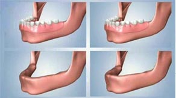

The toothless no more need to be concerned about wearing dentures as the modern-day dentistry implant techniques are to the rescue. These techniques offer immediate functionality with sustainable life of the implants.
This treatment comprises a prosthesis solidly held in place, by four dental implants (‘All-on-Four’ Procedure), which provides comfort and security, a patient is likely to be missing with removable dentures, and also preserves bone in the jaw.
Apart from receiving a fully customized set of replacement teeth in just a day, another remarkable benefit afforded by the procedure is its ability to almost always bypass the need for bone grafting - a surgery frequently required by more traditional treatment for patients with substantial loss of bone in the jaw.
The ‘All-on-Four’ procedure eliminates day-to-day frustrations and discomforts of dentures, and patients can once again enjoy the dietary freedom with natural teeth. It is the most sophisticated solution there is to tooth loss and edentulism. The technology has made its way in to and across several hospitals in India, and the cost of the surgery is trivial in front of the end result.
All-on-Four at IndianHealthGuru Group
- Largest provider of All-on-four in India
- All specialists under one roof
- Our own in-house lab, insuring the highest level of quality and fit
- Full titanium bar supports both the temporary and final restoration to ensure against breakage
CT scan in office - We are not a multi-location office or corporately owned, we are owned and operated by dentist who has patient's best interest in mind
Traditional approaches to restoring a full arch of teeth usually involved bone grafts, six or more implants, and as many as 18 months of treatment. That means that a patient often would be without any teeth or with ill-fitting temporary dentures for more than a year.
With the All-on-four Dental Implant Procedure, the patient has one or two visits to our office to allow the Oral Surgeon and Restorative Dentist to gather information for a treatment plan (e.g., CAT scan, X-rays, impressions, photos). Following this consultation, the patient is scheduled for surgery implantation and the new teeth are fitted and adjusted within 24 hours (even when extractions are necessary).
The patient will have to make occasional visits for check-up over the next several weeks and months. After almost six months, when the gums have fully healed and the implants are fused to the natural bone, we will take new impressions of the patient's mouth and prepare a final, stronger, permanent set of teeth adjusted to a perfect fit. This helps ensure the longest life of the teeth, and provide maximum support, beauty, and function to the patient.